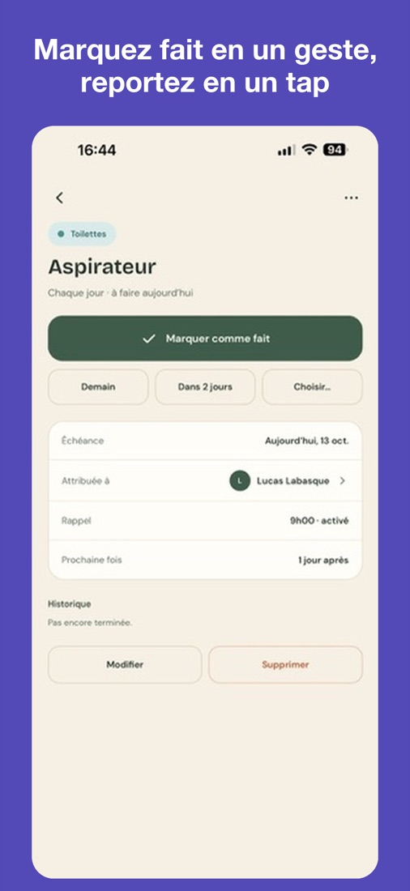
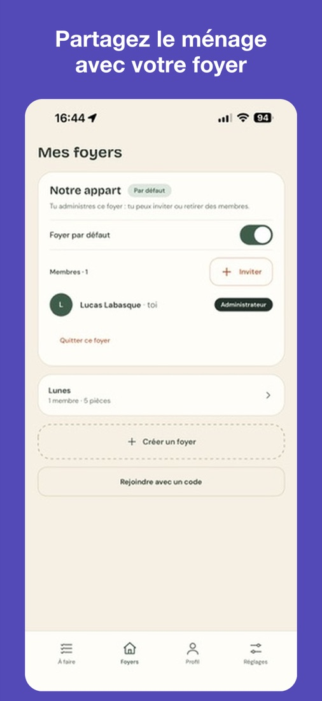

Le ménage, pièce par pièce
Planifie les tâches de chaque pièce, répartis-les entre les membres de ton foyer et reçois un rappel au bon moment. Une tâche est faite ? Marque-la en un geste : la prochaine échéance se calcule toute seule.
Aperçu de l'application


Ce qui t'attend
- Des tâches par pièce, avec leur fréquence et leur prochaine échéance
- Trois vues : pièces, liste et calendrier
- Un foyer partagé : invite d'autres personnes avec un code et attribue les tâches
- Des rappels à l'heure que tu choisis
- Un mode vacances qui met les rappels en pause et reporte les tâches
- Sans publicité, et utilisable sans compte sur ton appareil
Questions fréquentes
Faut-il créer un compte ?
Non. Choisis « Utiliser sans compte, sur cet appareil » : tes tâches restent sur ton téléphone. Un compte Apple ou Google est nécessaire pour partager un foyer et retrouver tes données sur un autre appareil.
Comment rejoindre un foyer ?
Connecte-toi, ouvre l'onglet Foyers, touche « Rejoindre avec un code » et saisis le code d'invitation reçu.
Je ne reçois pas les rappels
Vérifie que les notifications sont activées dans l'onglet Réglages de l'app, puis dans les réglages de ton téléphone. Le mode vacances met aussi les rappels en pause.
La connexion ne fonctionne pas
Vérifie ta connexion internet, puis réessaie. Si le problème continue, écris-nous en indiquant le service utilisé (Apple ou Google).
Comment supprimer mon compte ?
Dans l'onglet Profil, touche « Supprimer mon compte ». Tu peux aussi en faire la demande par e-mail. Le détail se trouve dans la politique de confidentialité.
Nous contacter
Un bug, une question, une idée ?
Écris à labasquelucas@gmail.com
Indique ton modèle de téléphone : on répond sous quelques jours.